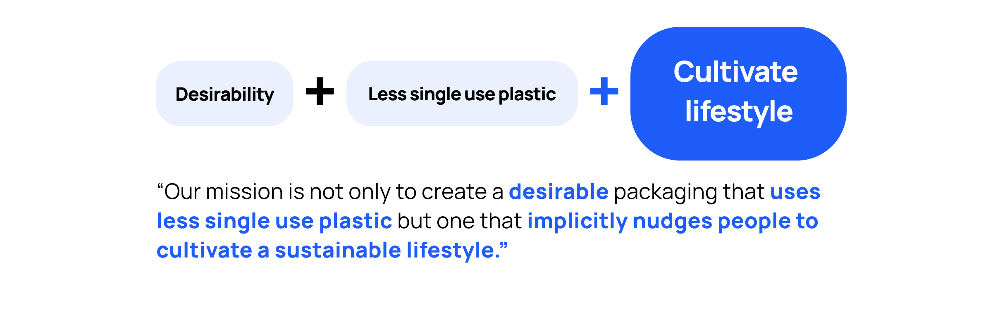

2 min read
Project at a Glance
Background
Kellogg Design Challenge is the world largest MBA design challenge that applies human-centered design to solve complex, customer-facing business challenges confronting a forward-thinking partner.
My team JellyCrew from CMU won second place and awarded $6,000 in 2021 KDC.
Team and Timeline
Together with 4 Tepper MBA students, I was given 2 weeks and $150 research budget to rapidly turn around a human-centric and research-based solution around the topic of sustainabiity.
Problem
Collaborating on the new product launch, Vaseline challenged us with this prompt.
How can we reimagine packaging for the Vaseline lotion consumer to provide a superior consumer experience while using dramatically less plastic?
Also, Vaseline scoped down the problem space with several constraints:
1. Don't touch formula and focus on packaging design.
2. Aim for a premium feeling while stay true to brand visual ID.
3. Customer benefit is 1st priority, sustainabiity is 2nd.
Design that Persuades,
implicitly.
I utilized Obfuscating,
a strategy from embedded design approach.
Explicit approaches can backfire.
1. Trigger aversive arousal and resistance that results from perception that someone is attempting to change one’s attitude or behavior.
2. Interrupt engagement and enjoyment using the product.
3. Self-affirmation ( e.g. feeling good about themselves recycling ) will decrease if people are aware of the intention
We call this a “nudge” design, where a tiny change in product leads to significant changes in user behavior.
A concept which we heavily utilize throughout our design process.

Secondary Research:
Mix Big Data & Thick Data.
Primary Research:
Value the Context.
One week research sprint
In Store real-context
User studies happened at local grocery stores Giant Eagle and Target to integrate the shelf-impact and remind users with approximation of purchasing environment.
Diversified Sample
We intentionally reached beyond personal connection, which are youth with shared socio-economic background. Thus, a diversified sample was recruited on site in store.
4 UX Methods
Utilized research methods:
(1) Shop-along,
(2) Directed Storytelling,
(3) Artifact Analysis,
(4) Post-study survey.

Synthesis Process
By clustering data into an affinity diagram,
we negotiated and defined the most common themes related to the particular experience.
Quickly brought us into the centre of what people are doing, saying and thinking.

Research Insights
Low Desirability:
Bottle aesthetics is not eye-catching on the shelf and not premium.
Low Usability:
Users complain about not being able to finish off the last drop.
The packaging blocked consumers of fully use what they paid for, harming customer benefit and causing frustrations.
Low Sustainability:
The pump is not recyclable and not removable, turns the whole package into a single use plastic.
Users are confused about recycling information.

Prototyping
Let's Hop on a Customer Journey.
Meet Joan here, she is an african American women living a busy city life.
Let’s follow Joan to her grocery trip.
Premium Look +
"100% Less Single Used Plastic"?
Taking a quick glance at the lotion shelf, Joan noticed the new Vaseline package in brown, which has much higher discoverability than the other white bottles that blends into the background. The metallic gold colored text and reflective semi-transparent material gives out premium feeling.
Took a closer look at it, she noticed:
- Label indicated an easily twist to open to use the last drop.
- Advertised 100% less single used plastic compare to traditional lotion packaging.

Scanned the QR code to see how vaseline make it sustainable
The interface exlained how this new packaging turned the old single used plastic bottle into a combination of a reusable top and a recyclable bottom.
Also, Joan can get to know the upstream and downstream process of this packaging. "If I recycle and reuse, this is what going to happen."

Open to finish the last drop.
Joan happily purchased it and used it quite frequently. Soon, she used most of it and could not pump out any lotion, Joan recalled the frustration of searching on YouTube seeing people opening the old bottle with a screw driver.
But this time, Joan noticed with the new packaging, she can now twist and remove the top pump easily and use her fingers to scoop off the last bit of lotion.

Something hidden at the bottom!
As she empty the lotion more, Joan found out that there seemed to be a QR code printed at the inner bottom of the jar.
This triggered her curiosity to clean the bottom more thoroughly to see the entire code. When she scanned it, she got a 15% off coupon when subscribing to a monthly refill service as Vaseline Care member.
Empty the Jar thoroughly,
Gamified experience adds sparks of joy & motivates users to recycle.
This enables a hassle free recycle, because before Joan even realized, she already cleaned the jar while trying to scan the bottom QR code.
She only need to place the empty container in recycle, which is also promptly reminded through the digital interface. Thus, she knew she recycled correctly and felt good about herself.

Reuse the top,
with a new discounted refill.
When the refill subscription arrived, Joan re-attached the old pump to the new refill and started her journey again.
No place for drop-offs
on this positive rollercoaster.
While the current vaseline packaging blocked reminants usage and recycle,
our design implicitly feeds in the notion of recycle at multiple touchpoints,
finally nudging users to reuse the un-recycable pump and recycle the bottom.

Will this work in the market?

Takeaways.
Challenge: recruit strangers live in store.
The first few attempts were brutal failures. Then, I adjust my on-the-spot recruiting strategies:
1. Establish credibility first
I showed my CMU student ID while provide a quick context, so people would not think being approached by a strange girl in public.
2. Human only have a 3 second patience span, seize the chance.
Previously, I started off by explaining what we expect them to do: walk us together to the lotion section of the store and perform a 15min study. Even I made that sound a quick and easy task, people interrupted me and walked away before I mention the compensation.Later, I adjusted my speech. I bring up the gift-card compensation right at front, so people will be more intrigued and more likely to join me.
3. When low of budget, gradually raise the compensation based on recruiting difficulty.
Although we had $150 research budget, we still want to be mindful of how we spent it. (It turns out the later 3D printing also needs money.) So we started with 0, found none; then raised it to $5, found a few; then finally raised it to $10 when we think it’s getting difficult to get people on board.
Yiwen Hou
User Experience Enthusiast.
Get in touch
Tel: +1 (858)736-7402
Drop me an email: yvonnehou98@gmail.com
I am located at: San Diego, CA

Our site uses cookies. By continuing to use our site, you agree to our Cookie Policy.